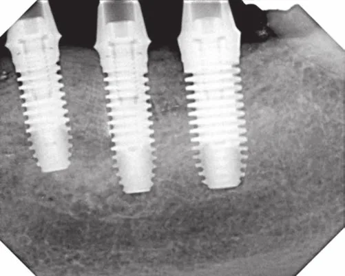
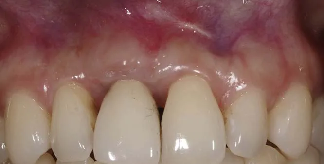

نسخه استخراجشده؛ ترجمه یا تأیید علمی انجام نشده است. وضعیت: captured
تا اینجا یاد گرفتی چگونه بیماری را تشخیص بدهی. حالا باید بدانی چه کاری بکنی — و پاسخ به شدت وضعیت بستگی دارد.
یک مقیاس کیفیت سلامت ایمپلنت با چهار گروه وجود دارد، و برای هر گروه یک برنامهی درمانی مشخص.
گروه ۱ — موفقیت. کوتاه و روشن: «ایمپلنتهای گروه ۱ از یک برنامهی نگهداری معمول هر ۶ ماه پیروی میکنند.»
یعنی هیچ مداخلهی درمانی، فقط پایش منظم.
گروه ۲ — بقای رضایتبخش. اینجا پنج اقدام مشخص لازم است:
«درمان اندیکاسیونشده برای ایمپلنتهای گروه ۲ شامل پروتکل کاهش استرس برای سیستم ایمپلنت، فواصل کوتاهتر میان جلسات بهداشت (برای نمونه ۳ ماه)، تقویت دستورهای بهداشت دهان، رادیوگرافی سالانه تا زمانی که استخوان کرستال پایدار شود، و ژنژیوپلاستی یا پروسیجرهای کاهش سولکوس در جایی که اندیکاسیون دارد است.»
به منطق این پنج بند دقت کن — هیچکدام جراحی بازسازی نیست:
• کاهش استرس — چون بار اضافی یکی از عوامل است.
• ۳ ماه بهجای ۶ ماه — نصف کردن فاصله؛ چون موکوزیت میتواند پس از تنها ۳ ماه تجمع پلاک پیش برود.
• تقویت آموزش بهداشت — نه تکرار، بلکه تقویت.
• رادیوگرافی سالانه تا پایداری — و کلمهی «تا» مهم است: این یک تعهد موقت با معیار پایان مشخص است.
• ژنژیوپلاستی یا کاهش سولکوس — یعنی اصلاح آناتومی که بهداشت را دشوار کرده.
گروه ۳ — بقای بهخطرافتاده. تعریفش: «ایمپلنتهای گروه ۳ در دستهی بقای بهخطرافتاده طبقهبندی میشوند و پریایمپلنتیت خفیف تا متوسط و وضعیت سلامت بهخطرافتاده نشان میدهند.»
و معیارهای عددیاش:
• «بیش از ۴ میلیمتر تحلیل استخوان کرستال از زمان کاشت ایمپلنت رخ داده ولی کمتر از نصف طول ایمپلنت.»
• «عمقهای پروبینگ بیش از ۷ میلیمتر و در حال افزایش نیز حاضرند، معمولاً همراه با خونریزی هنگام پروب.»
دو عدد را نگه دار: ۴ میلیمتر تحلیل، ۷ میلیمتر عمق. و «نصف طول ایمپلنت» همان مرزی است که گروه ۳ را از گروه ۴ جدا میکند.
گروه ۴ — شکست. ایمپلنتی که از این مرزها گذشته، دیگر کاندید درمان نگهدارنده نیست.
و یک واقعیت بالینی را هم باید پذیرفت: «گاهی بیمار اجازهی خروج ایمپلنت را نمیدهد.» — یعنی طبقهبندی، تصمیم را روشن میکند ولی اجرای آن همیشه در اختیار درمانگر نیست.

برای گروه ۳، یک ترتیب صریح وجود دارد که نباید بههم بخورد:
«یک رویکرد سهمرحلهای برای این دسته به ترتیب زیر اجرا میشود: (۱) درمان ضدمیکروبی (موضعی یا سیستمیک)، (۲) کاهش استرس، و (۳) مداخلهی جراحی.»
عبارت «به ترتیب زیر» را جدی بگیر. جراحی آخرین گام است، نه اولین. و منطقش روشن است: جراحی روی محل عفونی و تحت بار اضافی، شکست را تکرار میکند.
پس پیش از هر فلپی، دو کار باید انجام شده باشد: بار میکروبی پایین آمده باشد و بار مکانیکی کنترل شده باشد.
و کاهش استرس با چه ابزاری؟ «یک گارد اکلوزال برای پیشگیری از استرس اکلوزالی نامطلوب حیاتی است» و حضور عادتهای پارافانکشنال (مانند کلنچینگ و براکسیسم) باید مستند و درمان شود، که رایجترین راهش گارد اکلوزال است.
حالا نشانههای بالینی که باید بشناسی:
فهرست نشانهها: «تحلیل عمودی استخوان (در رادیوگرافی، با پروب یا هر دو)، پاکت پریایمپلنت، خونریزی هنگام پروب (با یا بدون اگزودا)، تورم و اریتم مخاطی، و نبود درد.»
به آخرین قلم دقت کن: «نبود درد».
این یک نشانهی مثبت است، نه غیبت اطلاعات. یعنی وقتی همهی این یافتهها هست و بیمار درد ندارد، تصویر کاملتر میشود نه ناقصتر.
و پیامدش همان چیزی است که در یونیتهای پیش دیدی: بیمار خودش خبر نمیدهد. اگر منتظر شکایت بمانی، هرگز این بیماری را بهموقع نمیبینی.
و یک هشدار زمانی که همهچیز را فوری میکند:
پژوهشها نشان دادهاند که «موکوزیت پریایمپلنت ممکن است پس از تنها ۳ ماه تجمع پلاک اطراف ایمپلنتها پیشرفت اپیکالی نشان دهد.»
سه ماه. این عدد را با فاصلهی جلسات نگهداری کنار هم بگذار — و میفهمی چرا فاصلهی ۳ ماهه برای گروه ۲ انتخاب شده و چرا فاصلهی طولانیتر برای بیمار پرخطر خطرناک است.
و هشدار: مسیر یکطرفه نیست ولی پنجره محدود است: «اگر بهدرستی درمان نشود، وضعیت التهابی پایدار ممکن است به پریایمپلنتیت پیشرفت کند که به از دست رفتن برگشتناپذیر استخوان میانجامد.»
«برگشتناپذیر» — همان کلمهای که تفاوت موکوزیت و پریایمپلنتیت را در یک واژه خلاصه میکند.

نوع سؤال: ساخت کلمه · 7 خانه
حروف منبع: ی · ا · ل · پ · ک · ی · ا